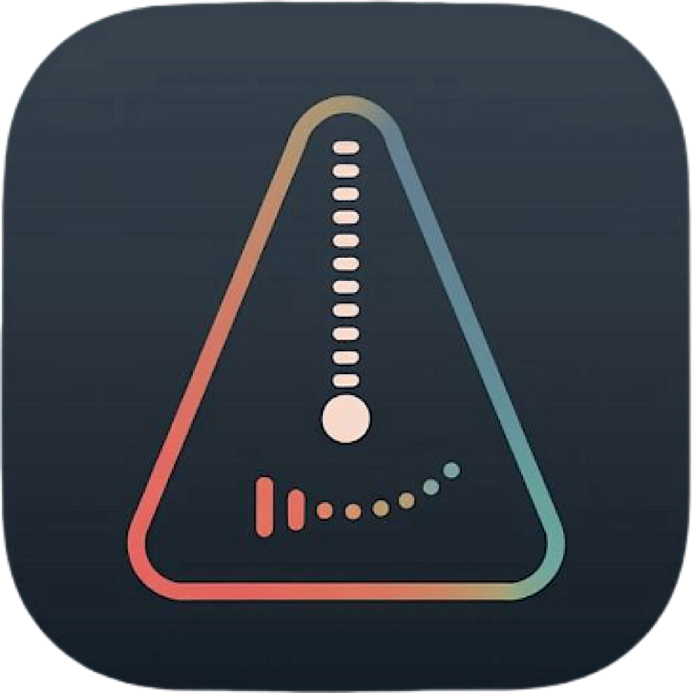

TicTacGroove
iOS출시됨Shipped
메트로놈에 맞춰 연습은 하는데, 내가 정확한지 빠른지 느린지는 어떻게 알지?I can practice along with a metronome — but how do I know if I'm spot on, rushing, or dragging?
그 질문에서 시작한 리듬 연습 앱입니다. 한동안은 DAW에 기타를 연결해 녹음하고, 파형을 들여다보며 박자를 확인했는데 — 그 과정이 너무 귀찮아서 연습 자체를 멀리하게 되더라고요. 그래서 만들었습니다. 박자를 들려주는 데서 멈추지 않고, 내 박자가 어디에 떨어지는지 보여주는 메트로놈입니다.A rhythm practice app that started with that question. For a while I'd plug my guitar into a DAW, record, and squint at waveforms to check my timing — tedious enough that I started avoiding practice altogether. So I built this instead: a metronome that doesn't just play the beat, but shows you where yours actually lands.
기타 노트
Apple ecosystem만드는 중In the works
음악 노트와 사보 프로그램을 하나로 합친 앱입니다. 연습하다 떠오른 프레이즈를 적어두는 노트와, 그걸 악보로 옮기는 도구가 따로 놀지 않았으면 해서 만들고 있습니다.A music notebook and a notation tool, combined into one. The phrase you jot down mid-practice and the score it eventually becomes shouldn't live in separate apps — so I'm building one where they don't.
비데맨
iOS · Android출시 준비 중Almost ready
작업실이 늘 진지할 필요는 없으니까 — 뜬금없지만, 게임도 만듭니다. Flutter로 만든 캐주얼 게임이고, 지금 출시를 앞두고 있습니다.A workshop doesn't have to be serious all the time — so, out of nowhere, a game. A casual game built with Flutter, just about ready to ship.